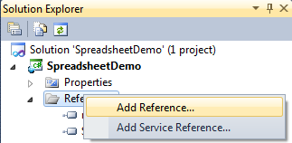
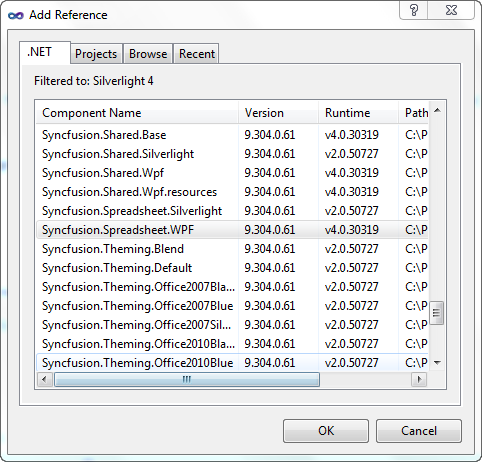

The steps involved to deploy the Spreadsheet control for WPF from GAC are as follows:
1. Open Visual Studio.
2. On the Solution Explorer, right-click on the References folder and select Add Reference.

Figure 4: Add Reference
3. The Add Reference window will open.

Figure 5: Add Reference window
4. Select the .NET tab. A list of assemblies available in GAC will be displayed.
5. Select the following assemblies:
· Syncfusion.Core.dll
· Syncfusion.Spreadsheet.WPf.dll
· Syncfusion.Grid.WPf.dll
· Syncfusion.GridCommon.WPf.dll
· Syncfusion.Linq.Base.dll
· Syncfusion.Tools.Wpf.dll
· Syncfusion.Shared.Wpf.dll
· Syncfusion.Compression.Base.dll
· Syncfusion.XlsIO.Base.dll
6. Click OK.
Note: For the .NET client profile application you have to add the Syncfusion.Spreadsheet.Wpf.ClientProfile.dll and Syncfusion.XlsIO.ClientProfile.dll instead of Syncfusion.Spreadsheet.WPf.dll and Syncfusion.XlsIO.Base.dll.